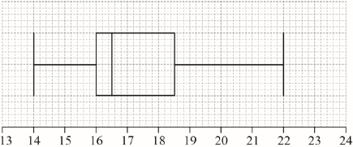

(M1)
Note: Award (M1) for correct substitutions into mean formula.
(A1) (C2)
[2 marks]
16.5 (A1) (C1)
[1 mark]
 (A1)(A1)(A1)(ft) (C3)
Note: Award (A1) for correct endpoints, (A1) for correct quartiles, (A1)(ft) for their median. Follow through from part (a)(ii), but only if median is between 16 and 18.5. If a horizontal line goes through the box, award at most (A1)(A1)(A0). Award at most (A0)(A1)(A1) if a ruler has not been used.
[3 marks]